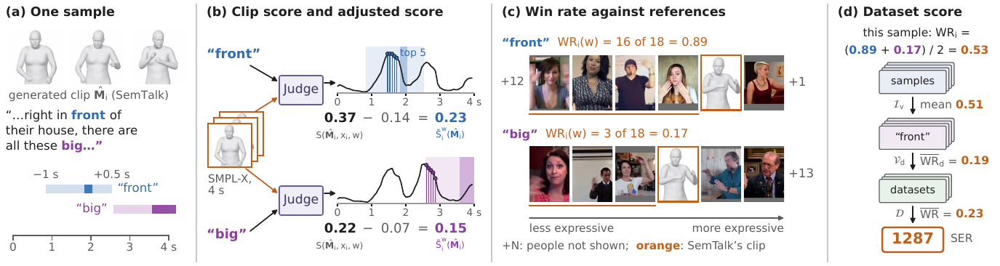
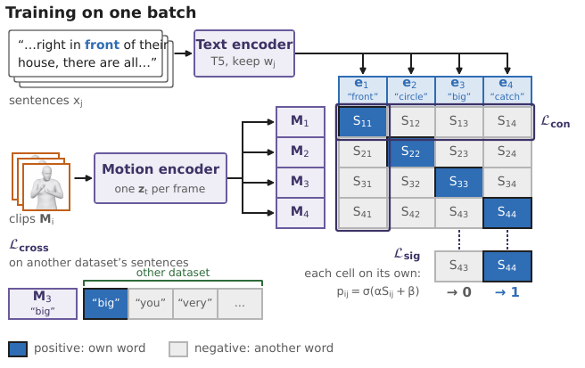
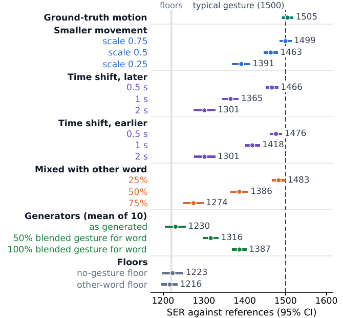
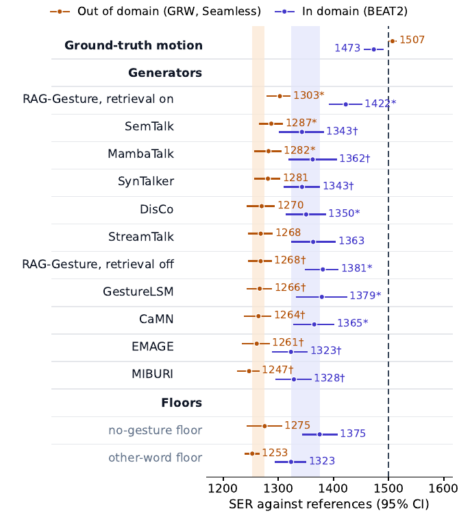

Moving Without Meaning: Benchmarking Semantic Expressiveness in Co‑Speech Gesture Generation
Do generated gestures show what the speech means? A benchmark that compares them with how people gesture for the same word.

Abstract
Co-speech gesture generators now animate characters in film, games and virtual agents. They produce natural motion that follows the rhythm of speech. However, they rarely produce meaningful gestures that show what the speech means. Moreover, current benchmarks measure only rhythm and realism, and none evaluate whether a gesture shows a word's meaning. Additionally, measuring the semantic expressiveness of a gesture has several challenges. People gesture for the same word in many forms, and some show it more clearly than others. A single ground-truth pose cannot capture this range. We introduce a benchmark that grades the semantic expressiveness of a generated gesture, i.e., how well it shows a word compared with how people gesture for it. Our judge is trained on word-level gesture labels from three datasets and scores how well a clip shows a marked word in its sentence. It then compares a generated clip's score with those of people who gesture for the same word. The comparison gives the Semantic Expressiveness Rating (SER), an Elo-style scale where a typical human gesture scores 1500. Our results show that the judge tells which word a held-out human gesture shows, while existing scorers stay near chance. Lastly, we benchmark ten recent generators and find that generating semantically expressive gestures remains challenging.
The Benchmark
A word has no single right gesture. Instead of matching one recorded pose, we score how well a clip shows a word and compare that score with held-out people who gesture for the same word.


Does SER Reliably Measure Semantic Expressiveness?
The judge recognizes which word a held-out human gesture shows, where existing scorers stay close to chance.
| Scorer | GRW | Seamless | BEAT2 |
|---|---|---|---|
| Judge (ours) | 0.834 | 0.781 | 0.730 |
| TMR, released | 0.521 | 0.559 | 0.533 |
| TMR, retrained on our data | 0.771 | 0.742 | 0.706 |
| FGD features | 0.591 | 0.584 | 0.577 |
| Kinematic statistics | 0.563 | 0.550 | 0.542 |
| CLIP ViT-L/14 | 0.529 | 0.512 | 0.513 |
| X-CLIP | 0.511 | 0.505 | 0.493 |

Agreement with people. Three raters compared 150 pairs of clips and chose the one that shows the marked word better. The judge agrees with the majority of two raters on 79% of the pairs of a generated clip and a human reference, close to the 83% agreement between raters.
What Does SER Reveal About Current Generators?
Semantically expressive gestures remain challenging for all ten generators, which leaves clear room for improvement.

How the Judge Reads a Clip
The judge's score for each word of the sentence over time, on the sample from the teaser. All four clips move during the speaker's gesture, but only the two that spread their hands score high for “huge”.


BibTeX
@inproceedings{anonymous2027moving,
title = {Moving Without Meaning: Benchmarking Semantic Expressiveness
in Co-Speech Gesture Generation},
author = {Anonymous Authors},
booktitle = {Under review},
year = {2027}
}